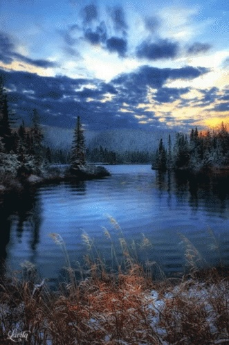
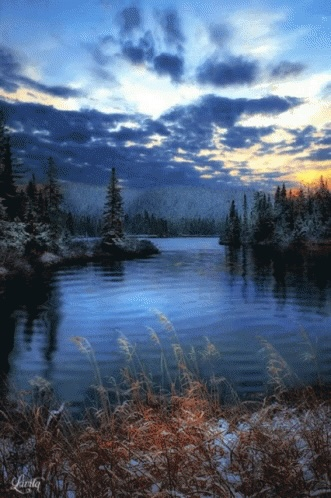
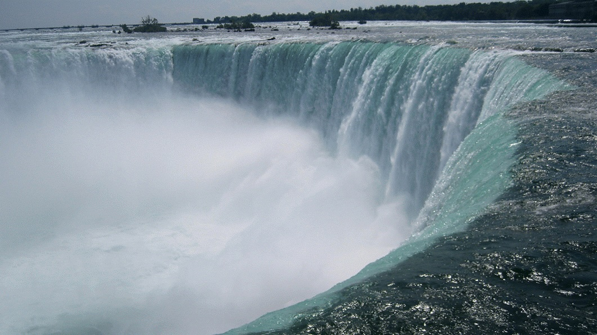
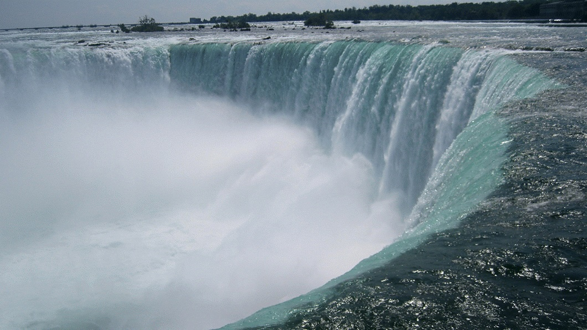

Travel
Yellowstone National Park
Photo Gallery

Mammoth Hot Springs has a number of actively forming Travertine terraces.

The drive to Lamar Valley requires some dangerous roads. But the result is amazing sunset views.

If you can handle the odor, the Yellowstone Sulphur Springs is a great place to hike.
Lake Tahoe
 


Geographical Location
North America
When it comes to things to do in South Lake Tahoe, you can shred down the mountain from 10,067 ft. at Heavenly Mountain Resort’s peak or you can dive into the depths of Lake Tahoe. It’s more than 1600 ft. deep, making it one of the deepest lakes in North America. Needless to say, there’s plenty of things to do in Lake Tahoe above and below the surface.
All parts of Lake Tahoe are beautiful and have something unique to offer. South Lake Tahoe is popular for its ski resorts like Heavenly, Sierra at Tahoe and Kirkwood ski resorts. South Lake Tahoe is also popular for its restaurants, shopping, casino resorts and vibrant nightlife.
Photo Gallery

Stateline Lake Tahoe

Tahoe beach retreat aerial

Best thing to do in lake tahoe before summer ends

Firepit at Zephyr Cove RV Park

Hikers watching sunset
Niagara Falls
 


Geographical Location
North America
Niagara Falls is located on the border between Canada and the United States. Connecting Lake Erie and Lake Ontario, Niagara Falls has the highest flow rate of any waterfall in North America.
Niagara Falls draws in thousands of visitors every year, and for good reason. As such, there are numerous things that you can see while you visit the falls, and it is very easy to make a full trip out of seeing this wonderful sight.
Photo Gallery

The ‘Horseshoe’

A rainbow in Niagara Falls

A sunset at Niagara Falls

A colorful view of Niagara Falls

A distant look at Niagara Falls